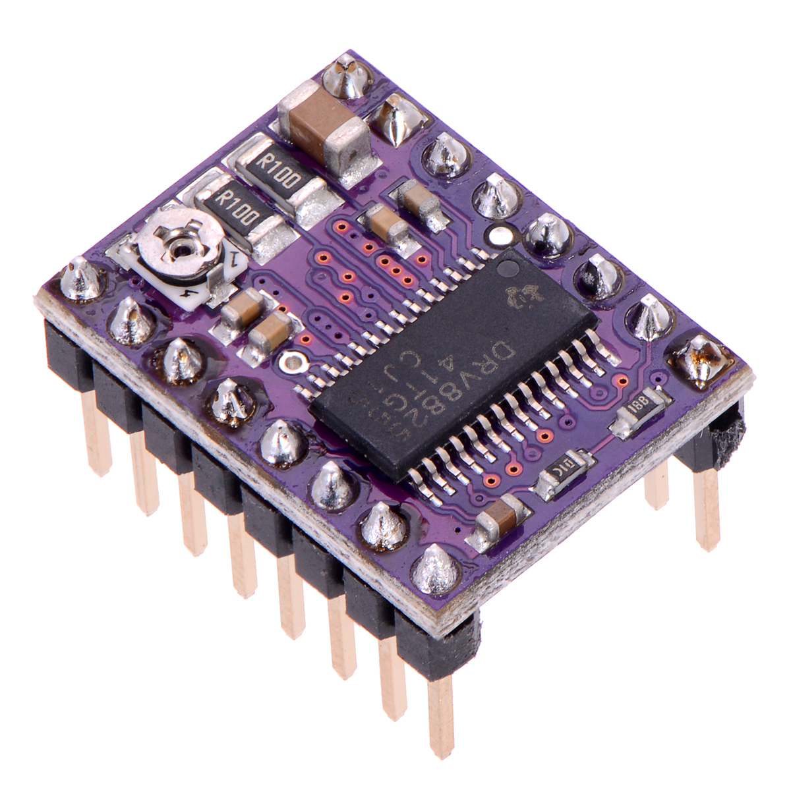
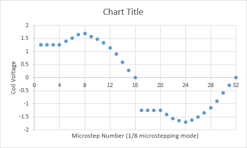
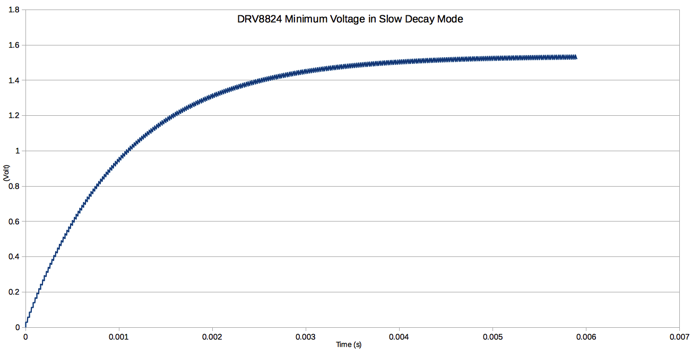

Introduction
The explanation below is the original work from catch22 published on Pololu's forum, and gives the theretical background what is happening when using the DRV8824 in microstepping mode.
Explanation
In brief, micro-stepping appears to be impossible with the driver. After measuring the voltage over the stepper motor coils, which for static situations (meaning the motor not turning fast) is similar as measuring the motor current, it it shows that there are steps missing in the motion profile (see picture below). The motor can be modelled as an L/R network with a resistor and inductance in series, in which the resistance is both the motor resistance Rmotor and Rds(on). In general, the formula for such an L/R network given a step response input voltage is given by:
Vstep(t) = Vdifferential * (1-exp(-(R/L)*t))
Where Vdifferential is the differential voltage, which equals the motor voltage Vmot in initial state.
When the voltage is removed again, the voltage across the L/R network is given by:
Vdecay(t') = Vdifferential * exp(-(R/L)*t')
So both are essentially exponentials with time constant R/L and amplitude given by the voltage differential. For the first PWM with duty cycle given by the blank time Tblank, the voltage across the stepper motor is:
V1 = Vmot * ( 1 - exp(-(R/L)*Tblank))
Then using slow decay, the voltage decays to:
V2 = V1 * exp(-(R/L)*Toff)
If this voltage is not decayed to zero volt, e.g. when Toff is too small, we end up with a residual voltage. With the next PWM cycle, voltage is again increase by approximately the value of V1, and the residual voltage is approximately twice the residual voltage of the first PWM cycle. This voltage increase continues until equilibrium state is reached.
An estimate of this can be calculated by linearising both exponential functions around the voltage in this equilibrium state. This equilibrium state is when the voltage increase due to Tblank is equal to the voltage decrease of Toff. Both are given by the linearisation of the first to formulae:
Vincrease(t) ~ (Vmot - Veq) * (R/L) * t
Vdecrease(t) ~ Veq * (R/L) * t
In equilibrium state Vincrease(Tblank) equals Vdecrease(Toff):
(Vmot - Veq) * (R/L) * Tblank = Veq * (R/L) * Toff
or
Veq = Vmot * Tblank / (Toff + Tblank)
So the equilibrium state depends on the motor voltage, and the ratio between Toff and Tblank, and is independant of R/L. The DRV8824 has a minimum duty cycle (Tblank) of 3.65 microseconds. Given the PWM frequency of 50kHz (or 20 microseconds period), the remaining time (Toff) the motor voltage is switched off is then 16.3 microseconds. The minimum motor voltage is 8.2V for this driver, which results in a minimum voltage of:
Veq = 8.2 * 3.65 / 20 = 1.49V
That's 18% of Vmot. It's also possible to simulate this behaviour using the first two formulae, giving the graphs attached / below. Within about 6 msecs, equilibrium state is reached.
